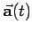

Inhalt Index DeskTop Bronstein

 Vektoranalysis und Feldtheorie Grundbegriffe der Feldtheorie Vektorfunktion einer skalaren Variablen
Vektoranalysis und Feldtheorie Grundbegriffe der Feldtheorie Vektorfunktion einer skalaren Variablen


| (13.4) |
Die Entwicklung einer Vektorfunktion in eine TAYLOR-Reihe hat nur Sinn, wenn die Reihe konvergiert. Die Konvergenz dieser Reihe wird ebenso wie die jeder beliebigen anderen Reihe mit vektoriellen Gliedern nach der gleichen Methode wie die Konvergenz einer Reihe mit komplexen Gliedern bestimmt. Man kann die Konvergenz einer Reihe mit vektoriellen Gliedern auf die Konvergenz von Reihen mit skalaren Gliedern zurückführen. Das Differential einer Vektorfunktion  wird definiert durch
| (13.5) |